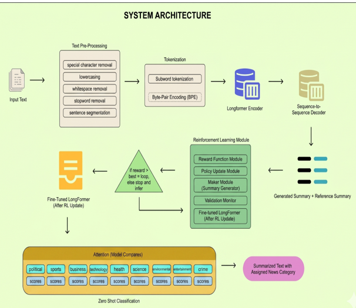

LoReCast: Longformer-Based News Article Summarization
A team research project exploring Longformer and reinforcement learning to produce concise, coherent summaries of long news articles.
My role: Team lead; assigned to clean and verify the dataset. Research focus: NLP and automatic text summarization.
50,000 ARTICLES CLEANED AND VERIFIED · +8.08 ROUGE-1 POINTS · 3× ROUGE-2 GAIN

System architecture diagram I created for the project
Scenario
News articles can be long and difficult to scan. Our thesis explored a Longformer-based summarization framework integrated with reinforcement learning, with the goal of producing concise summaries that preserve important context.
Summary
As team lead, I coordinated the research work and was assigned responsibility for cleaning and verifying the 50,000-article dataset. The study introduced LoReCast, a Longformer-based framework that uses reinforcement learning and a multi-objective reward approach. The reported results included an 8.08-point improvement in ROUGE-1 and a threefold ROUGE-2 gain over the study's baseline comparisons.
Key Challenges and Solutions
Preparing a large research dataset
The summarization work depended on consistent article data. My assigned contribution was to clean and verify records across the 50,000-article dataset, supporting more reliable downstream research and evaluation.
Coordinating team research
As team lead, I helped keep the research effort coordinated while contributing directly to dataset preparation. This paired the organizational work of leading a team with hands-on responsibility for data quality.
Training Pipeline Code
The Python scripts behind the Longformer + BART model: data loading and tokenization, model setup, training configuration, and evaluation. Each file below is downloadable.
Loads CNN/DailyMail from HuggingFace datasets, tokenizes articles and reference summaries, and builds the train/validation split.
Builds the Longformer-encoder + BART-decoder model and configures decoder start/eos/pad tokens and generation defaults.
Download ↓ model_wrapper.pyA small model subclass I wrote to fix a Trainer compatibility bug — strips an unexpected kwarg before it reaches the decoder.
Download ↓ config.pyTraining arguments — learning rate, batch size, epochs, checkpointing — used to configure the Seq2Seq trainer run.
Download ↓ train.pyThe training entry point — resumes from the latest checkpoint if one exists, then saves the final model and tokenizer.
Download ↓ evaluate_model.pyScores the trained model on held-out test articles using ROUGE-1/2/L against reference summaries.
Download ↓What I Learned
I learned how much large-scale data cleaning and verification matter to NLP research, and how team coordination supports a technically complex project. The experience strengthened both my attention to data quality and my ability to lead while owning a concrete project responsibility.
Why it Matters
This project shows that my contribution to analytical work goes beyond model results: I can take ownership of the data foundation, coordinate with a team, and help make research more dependable. It connects my practical data-cleaning experience with a substantial NLP research project.